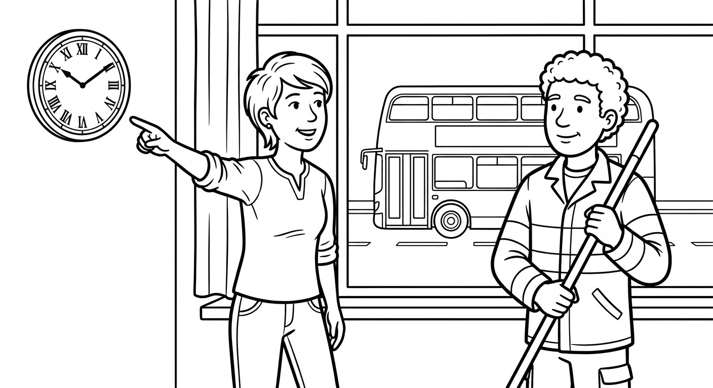

B1 Foundation Test 2
Your week, your things, schedules, and finding your way in the city. Show that you can understand times and routes, read practical messages, write about your week, and use the formulas from Chapters 5–7. (Sua semana, suas coisas, horários e como se localizar na cidade. Mostre que você entende horários e rotas, lê mensagens práticas, escreve sobre sua semana e usa as fórmulas dos Capítulos 5–7.)

| Section | Points | Score |
|---|---|---|
| 1. Listening | 25 | ____ / 25 |
| 2. Reading | 20 | ____ / 20 |
| 3. Writing | 20 | ____ / 20 |
| 4. Grammar and Vocabulary | 35 | ____ / 35 |
| Total | 100 | ____ / 100 |
Tempo sugerido: 70 minutos. O professor vai ler o texto de listening duas vezes. Você pode fazer anotações curtas. Escreva com letra clara. Nas respostas abertas, comunicar a mensagem é tão importante quanto a gramática perfeita. (Suggested time: 70 minutes. The teacher will read the listening text twice. Communication matters as well as accuracy.)
Listening: The Computer Course Schedule
Before reading: give students 45 seconds to preview Questions 1–5. Read the complete script once at slow, careful B1 speed — read the times and the bus number clearly. Pause for 30 seconds. Read it a second time. Do not explain vocabulary during the test. You may give procedural instructions in Portuguese. Total recommended time: Listening 12 min, Reading 15 min, Writing 18 min, Grammar/Vocabulary 25 min.
Secretary: Good evening! How can I help you?
Bruno: Hello! I want information about the computer course. When is it?
Secretary: The classes are on Mondays and Wednesdays, from half past six to eight o'clock in the evening.
Bruno: Sorry, did you say six thirty or seven thirty?
Secretary: Six thirty. The classes always start on time.
Bruno: Great. And how do I get to the school? I don't have a car.
Secretary: Take the number 30 bus and get off at the market. The school is opposite the park, next to the pharmacy.
Bruno: Perfect. So, on Mondays and Wednesdays at six thirty. Thank you!
Answer with a word, a number, or a short sentence. (Responda com uma palavra, um número ou uma frase curta.)
What days are the computer classes?
On Mondays and Wednesdays.What time does the class start and finish? Write the times in digits.
From 6:30 to 8:00 (in the evening).Bruno is not sure about the time. What does he ask?
"Sorry, did you say six thirty or seven thirty?" (any close version of the repair question)Which bus does Bruno need to take?
The number 30 bus.Where is the school? Give one detail.
Opposite the park / next to the pharmacy (either detail).Reading: A Message from Marina
Hi Paulo!
I always go to the market on Saturdays, and this week I want to meet you there. Let's meet at half past two, in front of the café. It is easy to find: from the bus stop, go straight, turn left at the traffic lights, and the café is opposite the bank.
I usually go by bike, but on Saturday I'm going on foot. I am tall and I have long curly brown hair. I'm wearing a red T-shirt and jeans, so you can find me easily. My phone is in my brother's bag, so please don't call — his phone is old and mine is broken!
See you there, Marina
How often does Marina go to the market?
Always on Saturdays / every Saturday.What time do they meet? Write the time in digits.
At 2:30 (half past two), in front of the café.What should Paulo do at the traffic lights?
Turn left.What is Marina wearing on Saturday?
A red T-shirt and jeans.Writing: My Week
A new friend wants to know about your week. Write 50–70 words. Include: (Um novo amigo quer saber sobre a sua semana. Escreva de 50 a 70 palavras. Inclua:)
- two activities with a frequency adverb (always, usually, sometimes, never...) (duas atividades com um advérbio de frequência);
- the day and time of your English class, using on and at (o dia e a hora da sua aula de inglês, usando on e at);
- how you go there: by bus, by car, on foot... (como você vai até lá);
- one sentence about your family or home (uma frase sobre sua família ou casa);
- one question about your friend's week (uma pergunta sobre a semana do seu amigo).
| Writing criterion | Points | Teacher score |
|---|---|---|
| Completes the message and includes the five required details | 8 | ____ / 8 |
| Message is organized and understandable | 4 | ____ / 4 |
| Target language supports meaning (frequency adverbs, at/in/on, by + transport) | 4 | ____ / 4 |
| Vocabulary, spelling, and punctuation are clear enough | 4 | ____ / 4 |
Message completion comes first: did the student communicate the five details about their week? Do not deduct the same error twice. A message with imperfect grammar can score well when it is easy to understand. Written feedback may be given in Portuguese at this level.
Grammar and Vocabulary in Context
Complete or rewrite each everyday situation. Question 17 reviews Chapters 1–4. (Complete ou reescreva cada situação do dia a dia. A questão 17 revisa os Capítulos 1–4.)
Rewrite the sentence with the adverb in the correct position: "Pedro is late for class." (never)
Pedro is never late for class. (after the verb "be")Write the time in words, traditional style (o'clock, past, to, quarter, half): 3:45
quarter to fourWhat to Keep and What to Practice Next
| Skill | Score | Next action |
|---|---|---|
| Listening | ____ / 25 | Listen for days, times, bus numbers, and places. |
| Reading | ____ / 20 | Find the day, the time, the route, and the description in a message. |
| Writing | ____ / 20 | Describe your week with frequency adverbs and clear days and times. |
| Grammar/Vocabulary | ____ / 35 | Review adverb position, my/mine, at/in/on, is/has, and by/on foot. |